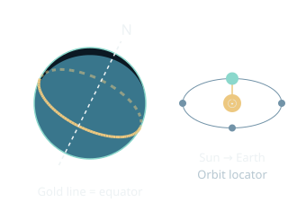
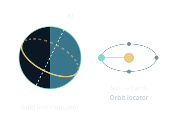
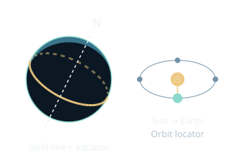
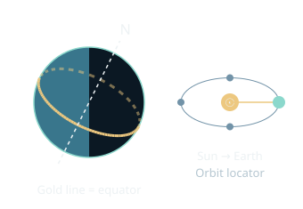
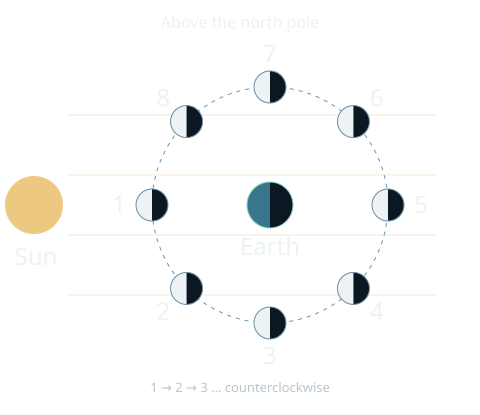
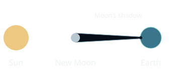
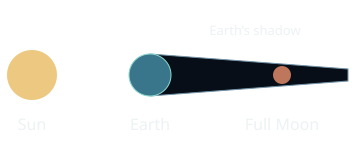

A shadow, a clock, a change in perspective. Start with something you can observe, then follow the reasoning from the size of Earth to the distance of a star.
01 / Combine what you know
Around the world in a fraction of a second.
When I was a kid, I was told that light could travel around Earth seven times in one second. Separately, I heard that light traveled about 186,000 miles per second—I remember Gary saying it in an episode of Pokémon.
I put those facts together and worked out that Earth must be about 26,000 miles around.
A new fact can be hiding between two things you already know.
What are we assuming?
“Seven times around Earth” is a distance comparison, not the actual path of a beam of light. These are remembered, rounded figures. This is a deduction from supplied facts, rather than an independent measurement of Earth.
Changing seven to seven and a half gives a noticeably different estimate. The arithmetic can be sound while its inputs remain approximate.
Try the childhood calculation
186,000 miles/s ÷ 7 circuits/s
Change an input. See how much the conclusion changes.
02 / Measure a part, infer the whole
A shadow can measure a planet.
Eratosthenes compared sunlight at two places. A difference in the Sun’s angle, combined with the distance between the places, revealed Earth’s curvature.
Angles in this globe sketch are enlarged for legibility. The calculation uses the measured angle.
Observe: in our simplified experiment, the Sun is overhead at site A. At site B, a vertical stick casts a shadow. Measure that shadow and the north–south surface distance between the sites.
Inferred circumference
The angle is about 7.2°. Roughly 50 copies of this arc make a complete circle.
Follow the geometry
The ratio of shadow length to stick height gives the tangent of the Sun’s angle from vertical:
θ = arctan(shadow ÷ height)
With parallel sunlight and a spherical Earth, that same angle separates the sites at Earth’s center:
circumference = distance × 360° ÷ θ
Assumptions and historical context
The sites lie on the same meridian, Earth is treated as a sphere, the sunlight is effectively parallel, and the Sun is directly overhead at A. Use a surface distance between sites, not a straight line through Earth.
This is an adjustable reconstruction of the idea, not a claim about Eratosthenes’ exact observations. Ancient distance units and surviving accounts introduce uncertainty. The separation is shown in modern kilometers for convenience; the reasoning works equally well in stadia, miles, or another consistently measured unit.
Revolutionary France proposed a meter as one ten-millionth of the distance from the equator to the North Pole along the Paris meridian. In that scheme, a kilometer was one ten-thousandth of that quarter-meridian—or one forty-thousandth of the full meridional circumference.
EquatorNorth PoleEquatorSouth PoleEquator
4 × 10,000 km = 40,000 km around a meridian
It was an agreement about a unit, followed by the difficult work of measuring and making a standard. It used a pole-to-pole meridian, rather than the circumference around the equator.
What changed?
Earth is not a perfect sphere, and the original survey was imperfect. Today the meter is defined using the speed of light and the second; Earth’s circumference is something we measure in meters, not what defines them.
An orbit’s proportions do not tell us its size in kilometers. A timed echo can supply the missing scale.
Observe: repeated observations reveal orbital periods. Kepler’s third law turns a ratio of periods into a ratio of orbital sizes. In this model, an inner planet takes 224.7 days to orbit; Earth takes 365.25.
Measure: time a radar pulse traveling from Earth to the inner planet and back. Use an ideal alignment with the inner planet directly between Earth and the Sun.
Inferred Earth–Sun distance
Follow the reasoning
orbital size ratio r = (224.7 ÷ 365.25)2/3 ≈ 0.723
The Earth–planet gap is therefore about 0.277 of the Earth–Sun distance. The echo measures that gap:
gap = light speed × echo time ÷ 2 Earth–Sun distance = gap ÷ (1 − r)
Dividing by two matters: the pulse had to make the return journey.
What is simplified?
These are hypothetical observations in a circular, coplanar, aligned model with negligible planetary motion during the echo. Actual measurements account for eccentric orbits, alignment, motion and where the reflection occurs. Planetary radar needs powerful transmitters and sensitive receivers; a simple principle does not imply simple equipment.
We use an independently established light speed here. Modern SI fixes its value at 299,792.458 km/s; historical measurements established light speed using other length standards. This experiment does not derive everything from scratch.
The astronomical unit is now exactly 149,597,870.7 km. Our inferred distance can differ from that fixed unit when you change the mock observation.
Orbital radii are in proportion in this idealized sketch. Planet sizes are enlarged. Adjusting echo time changes the scale in kilometers, while the proportions stay the same.
05 / Change your point of view
A small shift. An enormous distance.
Hold up a finger and look past it with one eye, then the other. Your finger seems to move against the background. That is parallax.
The depth is compressed and the angle exaggerated. Real stellar parallax is far too small to draw at this scale. The marker moves qualitatively; the readout uses the formula.
Observe: a nearby star shifts against more distant stars as Earth orbits the Sun. Two visits six months apart provide a baseline of roughly two astronomical units.
Reason: use half that shift, the angle p, with a one-au baseline. A smaller angle means a more distant star.
Inferred stellar distance
Build the triangle
An arcsecond is 1/3,600 of a degree. In a right triangle with the Sun at the right angle, a star at distance d, and Earth one au to the side:
tan(p) = 1 au ÷ d d = 1 au ÷ tan(p)
For very small angles in radians, tan(p) ≈ p. One arcsecond is π/648,000 radians. This gives about 206,265 au for a one-arcsecond parallax—the idea behind the parsec.
distance in parsecs ≈ 1 ÷ p in arcseconds
The modern parsec is defined as exactly 648,000/π au. The readouts use that definition and the small-angle distance convention. The exact right-triangle result differs negligibly at these angles.
What is assumed?
This sketch puts the star perpendicular to the baseline and treats Earth’s orbit as circular. A real observation fits the parallax motion over time and accounts for the star’s own motion and observational error. These sliders are hypothetical observations, not measurements of a named star.
A lightyear is a distance: how far light travels in a year. A parsec describes distance through an angle. The units emphasize different ways of thinking about the same space.
Kilometers
—
Astronomical units
—
Lightyears
—
Parsecs
—
Definitions behind these conversions
1 au = 149,597,870.7 km. One lightyear uses a Julian year of exactly 365.25 days, each 86,400 seconds, with light speed 299,792.458 km/s. One parsec = (648,000/π) au ≈ 3.26 lightyears. Displayed values are rounded; changing an experimental estimate does not redefine a unit.
06 / Keep the axis steady
One tilt. Two opposite seasons.
Earth’s axis is tilted about 23.4° from the perpendicular to its orbital plane. As Earth travels around the Sun, that axis keeps pointing in nearly the same direction. Each hemisphere takes a turn leaning into the sunlight.
Gold: equatorDashed white: rotation axis · N: north poleBlue: daylight · Dark: night
March equinox

Neither pole leans toward the Sun. Sunlight falls directly on the equator; day and night are approximately equal.
June solstice

North leans toward the Sun: longer days and a higher midday Sun. Northern summer; southern winter.
September equinox

Again, neither pole leans toward the Sun. The hemispheres exchange which one receives the longer days.
December solstice

South leans toward the Sun. Northern winter; southern summer. The axis has not flipped.
All four globes use the same oblique viewpoint and axis direction. The small orbit locators show Earth relative to the Sun. The rear half of the equator is dashed; sizes and distances are not to scale. This is an idealized circular orbit, not a view of today’s Earth.
Follow the sunlight
A higher Sun concentrates light onto a smaller patch of ground. A longer day gives that patch more time to receive energy. Together these make summer. Distance from the Sun cannot explain opposite seasons in opposite hemispheres.
Land and especially water store heat. After the summer solstice, incoming energy can still exceed outgoing energy, so temperatures keep rising even as days shorten. Cooling likewise takes time after the winter solstice.
This seasonal lag commonly puts temperature extremes weeks after the solstices—not generally at the equinoxes. Oceans, winds, clouds and local geography change the timing. Like an afternoon that is hotter than noon, the maximum temperature follows the maximum input.
Outside eclipses, sunlight illuminates half the Moon. As it orbits Earth, we see different fractions of that bright half. The shadowed part in an ordinary phase is the Moon’s own night, not Earth’s shadow.

Look down from above Earth’s north pole. Follow 1 through 8 counterclockwise. The lit half always faces the Sun, to the left. Sizes and distances are compressed.
Now stand on Earth.
Match each numbered position to the Moon’s appearance below. At new Moon, its bright half faces away from us. At full Moon, it faces toward us. At the quarters, we see half a disc—even though half the whole sphere is still illuminated.
The cycle takes about 29½ days. “Waxing” means the visible bright portion is growing; “waning” means it is shrinking. A “quarter” names progress through the cycle, not the fraction of the disc that looks bright.
The Moon doesn’t need to change shape. We only need to change our angle.
These Earth-view discs have lunar north up. The Moon can appear rotated in your sky depending on your location and the time. The top-down orbit flattens out the Moon’s orbital tilt; it does not predict an eclipse every month.
08 / Step into a shadow
An eclipse depends on where you stand.
The same three bodies can produce two very different sights. An eclipse needs close alignment, not just the right phase.
Solar eclipse · Sun → Moon → Earth

At new Moon, its shadow can reach Earth.
From the right place on Earth, the Moon covers some or all of the Sun. Totality occurs in the umbra; a partial eclipse occurs in the surrounding penumbra. If the Moon appears too small to cover the Sun completely, an annular eclipse leaves a bright ring.
For actual observing, use a proper solar filter; ordinary sunglasses are not safe. NASA’s viewing guidance.
Lunar eclipse · Sun → Earth → Moon

At full Moon, it can enter Earth’s shadow.
Earth blocks direct sunlight from reaching the Moon. A total lunar eclipse puts the whole Moon in Earth’s umbra. A partial one covers only part; a penumbral eclipse produces subtler dimming.
These side views show only the central shadow, or umbra. Penumbras, sizes and distances are omitted or simplified.
Why not every new and full Moon?
The Moon’s orbital plane is tilted about 5° to Earth’s orbital plane. Usually its shadow misses Earth, or the Moon passes above or below Earth’s shadow. Eclipses happen when new or full Moon occurs near a crossing of those planes, called a node.
Artist’s schematic of totality from the lunar near side. The reddish rim and ground are illustrative; their brightness and color vary.
Reverse the viewpoint
What does an eclipse look like on the moon?
Stand on the Moon’s Earth-facing side during a total lunar eclipse. Earth moves in front of the Sun: you are seeing a solar eclipse by Earth. I like to call this a “Terran eclipse”—a descriptive name here, rather than the standard astronomical term.
Earth’s dark disc hides the Sun. Sunlight passing through Earth’s atmosphere is filtered and bent into the shadow; a reddish atmospheric rim can surround Earth, and the lunar ground can acquire a dim red glow. This is the same light that makes an eclipsed Moon look coppery from Earth.
Reverse the event instead: during a solar eclipse on Earth, a suitably placed observer on the Moon could see the Moon’s small shadow crossing Earth’s sunlit face.
Created from Andur Carr’s idea and childhood recollection, with AI assistance. The aim is to make reasoning visible. The diagrams are explanatory models, with assumptions stated beside each experiment. Nothing is measured by your device.